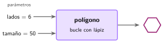
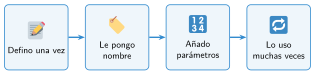

Tus propios bloques: las funciones
🤔 Pienso5 min
Qué hago aquí: Piensa un momento y contesta con lo que ya sabes. No pasa nada si no lo sabes: es para empezar.
Para el triángulo, el cuadrado y el hexágono montas tres bucles casi iguales. ¿Qué números cambian?
📖 Leo y aprendo15 min
Qué hago aquí: Lee despacio, mira los dibujos y los ejemplos, y quédate con la idea clave del final.
Si unos bloques se usan muchas veces, se les pone un nombre. Así nace un bloque nuevo: una función.


En Scratch: Mis bloques → Crear un bloque. Escribe el nombre y añade una entrada por cada parámetro.
✏️ Hago25 min
Qué hago aquí: Haz las actividades en orden. Empieza siempre por las básicas.
Crea el bloque polígono. Dibuja un triángulo y un cuadrado. Marca cuando funcione:
¿Qué dibuja polígono 8 40?
Escribe una ventaja de crear tus propios bloques.
Crea un bloque saltar, sin parámetros: el gato sube 50 pasos y baja. Úsalo al pulsar la flecha arriba.
✏️ Puedes responder escribiendo, con un dibujo o un esquema, o contándolo en voz alta.
🚀 Amplío (si quieres saber más)
Qué hago aquí: ¿Has terminado? Lee la curiosidad o elige el reto. Es voluntario.
Crea un bloque estrella tamaño (repetir 5, girar 144 grados). Después dibuja polígonos de 3 a 8 lados con un bucle y una variable n.
✅ Compruebo5 min
Qué hago aquí: Contesta sin mirar la ficha y marca cómo lo llevas.